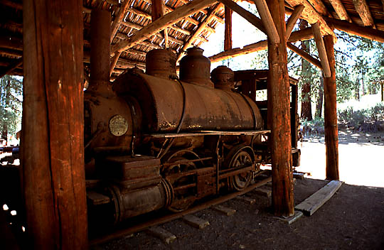

Last updated: 24 June, 2015
| Builder: | Baldwin Locomotive Works |
| Build #: | 7372 |
| Date: | 06/1884 |
| Engine #: | 1 |
| Railroad: | Mt Shasta Pine (California Redwood Co.) |
| Website: | https://stateparks.oregon.gov/, https://collierparkshop.com/ |
| Email: | friendscollier1@gmail.com |
| Location 1: | Collier Logging Museum, 46000 Hwy 97 N Chiloquin, OR 97624 |
| GPS: | 42.643158,-121.881842 Shed where locomotive is displayed. |
| Phone: | |
| Status: | Display |
| Notes: | This little 1884 Baldwin 0-4-0T is on display at the Collier State Park logging museum. Nicknamed "GOP" ("get out and push"), it was built for the California Redwood Co as their #1. Its last owner was the Mt. Shasta Pine & Manufacturing Co. |
Plan a few hours for s visit to this museum, there is a lot of fascinating logging equipment to see. Maybe more if you are really into old machinery.
| Class: | |
| Gauge: | 4'-8½" |
| F.M.Whyte: | 0-4-0T |
| Drivers: | 37 |
| Gear Ratio: | |
| Tractive Effort: | |
| Weight: | |
| Weight on Drivers: | |
| Length: | |
| Boiler: | |
| Cylinders: | 13x20 |
| Top Speed: | |
| Fuel: | |
| Fuel Type: | Wood |
| Water: | |
| Steam psi: |